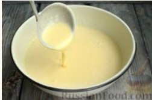
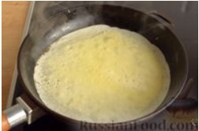
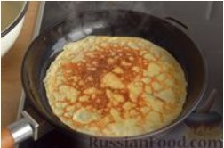

Подготовьте ингредиенты по списку.
Лучше, если все продукты для блинчиков будут комнатной температуры.
В глубокой миске соедините яйца, сахар и соль. Перемешайте венчиком до растворения сахара.
Влейте половину молока (250 мл). Перемешайте венчиком.
Всейте муку через мелкое сито. Перемешайте венчиком до однородности.
Влейте оставшееся молоко, перемешайте. Благодаря такому двухэтапному введению молока в тесте не будут образовываться комочки.
Влейте 1 ст. ложку растительного масла и перемешайте.
Тесто получится жидким, однородным, без комочков.
Дайте тесту постоять 15-20 минут - из муки выделится клейковина и блинчики не будут рваться.

На максимальном огне хорошо разогрейте блинную или чугунную сковороду и смажьте её растительным маслом.
Держа сковороду за ручку, налейте в центр сковороды половину половника теста.
Сразу же быстро вращайте сковороду, чтобы тесто равномерно распределилось по поверхности.
Жарьте блинчик на максимальном огне около 30 секунд.

Подцепите край блина лопаткой и переверните блинчик на другую сторону. Жарьте ещё 15-20 секунд.

Готовый блинчик снимите на тарелку и накройте широкой крышкой, чтобы блины оставались мягкими и тёплыми.
На сковороде диаметром 23 см должно получиться около 20 тоненьких блинчиков.
Блинчики на молоке можно свернуть конвертиком, рулетиком или трубочкой, завернуть в них любую начинку или просто есть с джемом, мёдом или сгущённым молоком.